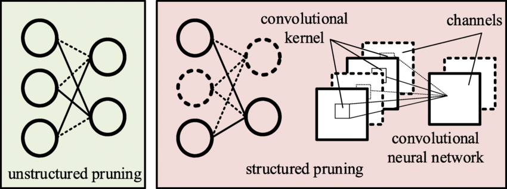
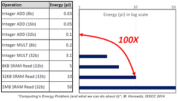
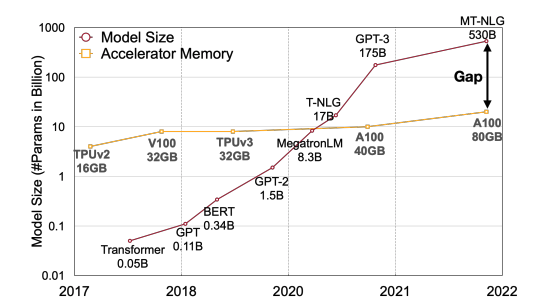

10 Model Optimizations
When machine learning models are deployed on systems, especially on resource-constrained embedded systems, the optimization of models is a necessity. While machine learning inherently often demands substantial computational resources, the systems are inherently limited in memory, processing power, and energy. This chapter will dive into the art and science of optimizing machine learning models to ensure they are lightweight, efficient, and effective when deployed in TinyML scenarios.
Learn techniques like pruning, knowledge distillation and specialized model architectures to represent models more efficiently
Understand quantization methods to reduce model size and enable faster inference through reduced precision numerics
Explore hardware-aware optimization approaches to match models to target device capabilities
Discover software tools like frameworks and model conversion platforms that enable deployment of optimized models
Develop holistic thinking to balance tradeoffs in model complexity, accuracy, latency, power etc. based on application requirements
Gain strategic insight into selecting and applying model optimizations based on use case constraints and hardware targets
10.1 Introduction
We have structured this chapter in three tiers. First, in Section 10.2 we examine the significance and methodologies of reducing the parameter complexity of models without compromising their inference capabilities. Techniques such as pruning and knowledge distillation are discussed, offering insights into how models can be compressed and simplified while maintaining, or even enhancing, their performance.
Going one level lower, in Section 10.3, we study the role of numerical precision in model computations and how altering it impacts model size, speed, and accuracy. We will examine the various numerical formats and how reduced-precision arithmetic can be leveraged to optimize models for embedded deployment.
Finally, as we go lower closer to the hardware, in Section 10.4, we will navigate through the landscape of hardware-software co-design, exploring how models can be optimized by tailoring them to the specific characteristics and capabilities of the target hardware. We will discuss how models can be adapted to exploit the available hardware resources effectively.

10.2 Efficient Model Representation
The first avenue of attack for model optimization starts in familiar territory for most ML practitioners: efficient model representation is often first tackled at the highest level of parametrization abstraction: the model’s architecture itself.
Most traditional ML practitioners design models with a general high-level objective in mind, whether it be image classification, person detection, or keyword spotting as mentioned previously in this textbook. Their designs generally end up naturally fitting into some soft constraints due to limited compute resources during development, but generally these designs are not aware of later constraints, such as those required if the model is to be deployed on a more constrained device instead of the cloud.
In this section, we’ll discuss how practitioners can harness principles of hardware-software co-design even at a model’s high level architecture to make their models compatible with edge devices. From most to least hardware aware at this level of modification, we discuss several of the most common strategies for efficient model parametrization: pruning, model compression, and edge-friendly model architectures.
10.2.1 Pruning
Overview
Model pruning is a technique in machine learning that aims to reduce the size and complexity of a neural network model while maintaining its predictive capabilities as much as possible. The goal of model pruning is to remove redundant or non-essential components of the model, including connections between neurons, individual neurons, or even entire layers of the network.
This process typically involves analyzing the machine learning model to identify and remove weights, nodes, or layers that have little impact on the model’s outputs. By selectively pruning a model in this way, the total number of parameters can be reduced significantly without substantial declines in model accuracy. The resulting compressed model requires less memory and computational resources to train and run while enabling faster inference times.
Model pruning is especially useful when deploying machine learning models to devices with limited compute resources, such as mobile phones or TinyML systems. The technique facilitates the deployment of larger, more complex models on these devices by reducing their resource demands. Additionally, smaller models require less data to generalize well and are less prone to overfitting. By providing an efficient way to simplify models, model pruning has become a vital technique for optimizing neural networks in machine learning.
There are several common pruning techniques used in machine learning, these include structured pruning, unstructured pruning, iterative pruning, bayesian pruning, and even random pruning. In addition to pruning the weights, one can also prune the activations. Activation pruning specifically targets neurons or filters that activate rarely or have overall low activation. There are numerous other methods, such as sensitivity and movement pruning. For a comprehensive list of methods, the reader is encouraged to read the following paper: “A Survey on Deep Neural Network Pruning: Taxonomy, Comparison, Analysis, and Recommendations” (2023).
So how does one choose the type of pruning methods? Many variations of pruning techniques exist where each varies the heuristic of what should be kept and pruned from the model as well the number of times pruning occurs. Traditionally, pruning happens after the model is fully trained, where the pruned model may experience mild accuracy loss. However, as we will discuss further, recent discoveries have found that pruning can be used during training (i.e., iteratively) to identify more efficient and accurate model representations.
Structured Pruning
We start with structured pruning, a technique that reduces the size of a neural network by eliminating entire model-specific substructures while maintaining the overall model structure. It removes entire neurons/channels or layers based on importance criteria. For example, for a convolutional neural network (CNN), this could be certain filter instances or channels. For fully connected networks, this could be neurons themselves while maintaining full connectivity or even be elimination of entire model layers that are deemed to be insignificant. This type of pruning often leads to regular, structured sparse networks that are hardware friendly.
Components
Best practices have started to emerge on how to think about structured pruning. There are three main components:
- Structures to target for pruning
- Establishing a criteria for pruning
- Selecting a pruning strategy
Structures to target for pruning
Given that there are different strategies, each of these structures (i.e., neurons, channels and layers) is pruned based on specific criteria and strategies, ensuring that the reduced model maintains as much of the predictive prowess of the original model as possible while gaining in computational efficiency and reduction in size.
The primary structures targeted for pruning include neurons, channels, and sometimes, entire layers, each having its unique implications and methodologies. When neurons are pruned, we are removing entire neurons along with their associated weights and biases, thereby reducing the width of the layer. This type of pruning is often utilized in fully connected layers.
With channel pruning, which is predominantly applied in convolutional neural networks (CNNs), it involves eliminating entire channels or filters, which in turn reduces the depth of the feature maps and impacts the network’s ability to extract certain features from the input data. This is particularly crucial in image processing tasks where computational efficiency is paramount.
Finally, layer pruning takes a more aggressive approach by removing entire layers of the network. This significantly reduces the network’s depth and thereby its capacity to model complex patterns and hierarchies in the data. This approach necessitates a careful balance to ensure that the model’s predictive capability is not unduly compromised.
Establishing a criteria for pruning
Establishing well-defined criteria for determining which specific structures to prune from a neural network model is a crucial component of the model pruning process. The core goal here is to identify and remove components that contribute the least to the model’s predictive capabilities, while retaining structures integral to preserving the model’s accuracy.
A widely adopted and effective strategy for systematically pruning structures relies on computing importance scores for individual components like neurons, filters, channels or layers. These scores serve as quantitative metrics to gauge the significance of each structure and its effect on the model’s output.
There are several techniques for assigning these importance scores:
- Weight magnitude-based pruning assigns scores based on the absolute values of the weights. Components with very small weights contribute minimally to activations and can be removed.
- Gradient-based pruning utilizes the gradients of the loss function with respect to each weight to determine sensitivity. Weights with low gradient magnitudes when altered have little effect on the loss and can be pruned.
- Activation-based pruning tracks activation values for neurons/filters over a validation dataset. Consistently low activation values suggest less relevance, warranting removal.
- Taylor expansion approximates the change in loss function from removing a given weight. Weights with negligible impact on loss are prime candidates for pruning.
The idea is to measure, either directly or indirectly, the contribution of each component to the model’s output. Structures with minimal influence according to the defined criteria are pruned first. This enables selective, optimized pruning that maximally compresses models while preserving predictive capacity. In general, it is important to evaluate the impact of removing particular structures on the model’s output.
Selecting a pruning strategy
The pruning strategy orchestrates how structures are removed and integrates with subsequent model fine-tuning to recover predictive performance. Two main structured pruning strategies exist: iterative pruning and one-shot pruning.
Iterative pruning gradually removes structures across multiple cycles of pruning followed by fine-tuning. In each cycle, a small set of structures are pruned based on importance criteria. The model is then fine-tuned, allowing it to adjust smoothly to the structural changes before the next pruning iteration. This gradual, cyclic approach prevents abrupt accuracy drops. It allows the model to slowly adapt as structures are reduced across iterations.
One-shot pruning takes a more aggressive approach by pruning a large portion of structures simultaneously in one shot based on predefined importance criteria. This is followed by extensive fine-tuning to recover model accuracy. While faster, this aggressive strategy can degrade accuracy if the model cannot recover during fine-tuning.
The choice between these strategies involves weighing factors like model size, target sparsity level, available compute and acceptable accuracy losses. One-shot pruning can rapidly compress models, but iterative pruning may enable better accuracy retention for a target level of pruning. In practice, the strategy is tailored based on use case constraints. The overarching aim is to generate an optimal strategy that removes redundancy, achieves efficiency gains through pruning, and finely tunes the model to stabilize accuracy at an acceptable level for deployment.
Advantages of Structured Pruning
Structured pruning brings forth a myriad of advantages that cater to various facets of model deployment and utilization, especially in environments where computational resources are constrained.
Computational Efficiency
By eliminating entire structures, such as neurons or channels, structured pruning significantly diminishes the computational load during both training and inference phases, thereby enabling faster model predictions and training convergence. Moreover, the removal of structures inherently reduces the model’s memory footprint, ensuring that it demands less storage and memory during operation, which is particularly beneficial in memory-constrained environments like TinyML systems.
Hardware Efficiency
Structured pruning often results in models that are more amenable to deployment on specialized hardware, such as Field-Programmable Gate Arrays (FPGAs) or Application-Specific Integrated Circuits (ASICs), due to the regularity and simplicity of the pruned architecture. With reduced computational requirements, it translates to lower energy consumption, which is crucial for battery-powered devices and sustainable computing practices.
Maintenance and Deployment
The pruned model, while smaller, retains its original architectural form, which can simplify the deployment pipeline and ensure compatibility with existing systems and frameworks. Also, with fewer parameters and simpler structures, the pruned model becomes easier to manage and monitor in production environments, potentially reducing the overhead associated with model maintenance and updates. Later on, when we dive into MLOps, this need will become apparent.
Unstructured Pruning
Unstructured pruning is, as its name suggests, pruning the model without regard to model-specific substructure. As mentioned above, it offers a greater aggression in pruning and can achieve higher model sparsities while maintaining accuracy given less constraints on what can and can’t be pruned. Generally, post-training unstructured pruning consists of an importance criterion for individual model parameters/weights, pruning/removal of weights that fall below the criteria, and optional fine-tuning after to try and recover the accuracy lost during weight removal.
Unstructured pruning has some advantages over structured pruning: removing individual weights instead of entire model substructures often leads in practice to lower model accuracy decreases. Furthermore, generally determining the criterion of importance for an individual weight is much simpler than for an entire substructure of parameters in structured pruning, making the former preferable for cases where that overhead is hard or unclear to compute. Similarly, the actual process of structured pruning is generally less flexible, as removing individual weights is generally simpler than removing entire substructures and ensuring the model still works.
Unstructured pruning, while offering the potential for significant model size reduction and enhanced deployability, brings with it challenges related to managing sparse representations and ensuring computational efficiency. It is particularly useful in scenarios where achieving the highest possible model compression is paramount and where the deployment environment can handle sparse computations efficiently.
The following compact table provides a concise comparison between structured and unstructured pruning. In this table, aspects related to the nature and architecture of the pruned model (Definition, Model Regularity, and Compression Level) are grouped together, followed by aspects related to computational considerations (Computational Efficiency and Hardware Compatibility), and ending with aspects related to the implementation and adaptation of the pruned model (Implementation Complexity and Fine-Tuning Complexity). Both pruning strategies offer unique advantages and challenges, and the selection between them should be influenced by specific project and deployment requirements.
| Aspect | Structured Pruning | Unstructured Pruning |
|---|---|---|
| Definition | Pruning entire structures (e.g., neurons, channels, layers) within the network | Pruning individual weights or neurons, resulting in sparse matrices or non-regular network structures |
| Model Regularity | Maintains a regular, structured network architecture | Results in irregular, sparse network architectures |
| Compression Level | May offer limited model compression compared to unstructured pruning | Can achieve higher model compression due to fine-grained pruning |
| Computational Efficiency | Typically more computationally efficient due to maintaining regular structures | Can be computationally inefficient due to sparse weight matrices, unless specialized hardware/software is used |
| Hardware Compatibility | Generally better compatible with various hardware due to regular structures | May require hardware that efficiently handles sparse computations to realize benefits |
| Implementation Complexity | Often simpler to implement and manage due to maintaining network structure | Can be complex to manage and compute due to sparse representations |
| Fine-Tuning Complexity | May require less complex fine-tuning strategies post-pruning | Might necessitate more complex retraining or fine-tuning strategies post-pruning |

Lottery Ticket Hypothesis
Pruning has evolved from a purely post-training technique that came at the cost of some accuracy, to a powerful meta-learning approach applied during training to reduce model complexity. This advancement in turn improves compute, memory, and latency efficiency at both training and inference.
A breakthrough finding that catalyzed this evolution was the lottery ticket hypothesis by Frankle and Carbin (2019). They empirically discovered by Jonathan Frankle and Michael Carbin. Their work states that within dense neural networks, there exist sparse subnetworks, referred to as “winning tickets,” that can match or even exceed the performance of the original model when trained in isolation. Specifically, these winning tickets, when initialized using the same weights as the original network, can achieve similarly high training convergence and accuracy on a given task. It is worthwhile pointing out that they empirically discovered the lottery ticket hypothesis, which was later formalized.
The intuition behind this hypothesis is that, during the training process of a neural network, many neurons and connections become redundant or unimportant, particularly with the inclusion of training techniques encouraging redundancy like dropout. Identifying, pruning out, and initializing these “winning tickets’’ allows for faster training and more efficient models, as they contain the essential model decision information for the task. Furthermore, as generally known with the bias-variance tradeoff theory, these tickets suffer less from overparameterization and thus generalize better rather than overfitting to the task.
Challenges & Limitations
There is no free lunch with pruning optimizations, with some choices coming with wboth improvements and costs to considers. Below we discuss some tradeoffs for practitioners to consider.
Quality vs. Size Reduction
A key challenge in both structured and unstructured pruning is balancing size reduction with maintaining or improving predictive performance. This trade-off becomes more complex with unstructured pruning, where individual weight removal can create sparse weight matrices. Ensuring the pruned model retains generalization capacity while becoming more computationally efficient is critical, often requiring extensive experimentation and validation.
Determining Pruning Criteria
Establishing a robust pruning criteria, whether for removing entire structures (structured pruning) or individual weights (unstructured pruning), is challenging. The criteria must accurately identify elements whose removal minimally impacts performance. For unstructured pruning, this might involve additional complexities due to the potential for generating sparse weight matrices, which can be computationally inefficient on certain hardware.
Fine-Tuning and Retraining
Post-pruning fine-tuning is imperative in both structured and unstructured pruning to recover lost performance and stabilize the model. The challenge encompasses determining the extent, duration, and nature of the fine-tuning process, which can be influenced by the pruning method and the degree of pruning applied.
Scalability of Pruning Strategies
Ensuring that pruning strategies, whether structured or unstructured, are scalable and applicable across various models and domains is challenging. Unstructured pruning might introduce additional challenges related to managing and deploying models with sparse weight matrices, especially in hardware that is not optimized for sparse computations.
Hardware Compatibility and Efficiency
Especially pertinent to unstructured pruning, hardware compatibility and efficiency become critical. Unstructured pruning often results in sparse weight matrices, which may not be efficiently handled by certain hardware, potentially negating the computational benefits of pruning. Ensuring that pruned models, particularly those resulting from unstructured pruning, are compatible and efficient on the target hardware is a significant consideration.
Complexity in Implementing Pruning Algorithms
Unstructured pruning might introduce additional complexity in implementing pruning algorithms due to the need to manage sparse representations of weights. Developing or adapting algorithms that can efficiently handle, store, and compute sparse weight matrices is an additional challenge and consideration in unstructured pruning.
Legal and Ethical Considerations
Last but not least, adherence to legal and ethical guidelines is paramount, especially in domains with significant consequences. Both pruning methods must undergo rigorous validation, testing, and potentially certification processes to ensure compliance with relevant regulations and standards. This is especially important in use cases like medical AI applications or autonomous driving where quality drops due to pruning like optimizationscan be life threatening.
10.2.2 Model Compression
Model compression techniques are crucial for deploying deep learning models on resource-constrained devices. These techniques aim to create smaller, more efficient models that preserve the predictive performance of the original models.
Knowledge Distillation
One popular technique is knowledge distillation (KD), which transfers knowledge from a large, complex “teacher” model to a smaller “student” model. The key idea is to train the student model to mimic the teacher’s outputs. The concept of KD was first popularized by Hinton (2005).
Overview and Benefits
At its core, KD strategically leverages the refined outputs of a pre-trained teacher model to transfer knowledge to a smaller student model. The key technique is using “soft targets” derived from the teacher’s probabilistic predictions. Specifically, the teacher’s outputs are passed through a temperature-scaled softmax function, yielding softened probability distributions over classes. This softening provides richer supervision signals for the student model compared to hard target labels.
The loss function is another critical component that typically amalgamates a distillation loss, which measures the divergence between the teacher and student outputs, and a classification loss, which ensures the student model adheres to the true data labels. The Kullback-Leibler (KL) divergence is commonly employed to quantify the distillation loss, providing a measure of the discrepancy between the probability distributions output by the teacher and student models.
Another core concept is “temperature scaling” in the softmax function. It plays the role in controlling the granularity of the information distilled from the teacher model. A higher temperature parameter produces softer, more informative distributions, thereby facilitating the transfer of more nuanced knowledge to the student model. However, it also introduces the challenge of effectively balancing the trade-off between the informativeness of the soft targets and the stability of the training process.
These components, when adeptly configured and harmonized, enable the student model to assimilate the teacher model’s knowledge, crafting a pathway towards efficient and robust smaller models that retain the predictive prowess of their larger counterparts.
Challenges
However, KD has a unique set of challenges and considerations that researchers and practitioners must attentively address. One of the challenges is in the meticulous tuning of hyperparameters, such as the temperature parameter in the softmax function and the weighting between the distillation and classification loss in the objective function. Striking a balance that effectively leverages the softened outputs of the teacher model while maintaining fidelity to the true data labels is non-trivial and can significantly impact the student model’s performance and generalization capabilities.
Furthermore, the architecture of the student model itself poses a considerable challenge. Designing a model that is compact to meet computational and memory constraints, while still being capable of assimilating the essential knowledge from the teacher model, demands a nuanced understanding of model capacity and the inherent trade-offs involved in compression. The student model must be carefully architected to navigate the dichotomy of size and performance, ensuring that the distilled knowledge is meaningfully captured and utilized. Moreover, the choice of teacher model, which inherently influences the quality and nature of the knowledge to be transferred, is important and it introduces an added layer of complexity to the KD process.
These challenges underscore the necessity for a thorough and nuanced approach to implementing KD, ensuring that the resultant student models are both efficient and effective in their operational contexts.
Low-rank Matrix Factorization
Similar in approximation theme, low-rank matrix factorization (LRMF) is a mathematical technique used in linear algebra and data analysis to approximate a given matrix by decomposing it into two or more lower-dimensional matrices. The fundamental idea is to express a high-dimensional matrix as a product of lower-rank matrices, which can help reduce the complexity of data while preserving its essential structure. Mathematically, given a matrix \(A \in \mathbb{R}^{m \times n}\), LRMF seeks matrices \(U \in \mathbb{R}^{m \times k}\) and \(V \in \mathbb{R}^{k \times n}\) such that \(A \approx UV\), where \(k\) is the rank and is typically much smaller than \(m\) and \(n\).
Background and Benefits
One of the seminal works in the realm of matrix factorization, particularly in the context of recommendation systems, is the paper by Yehuda Koren, Robert Bell, and Chris Volinsky, “Matrix Factorization Techniques for Recommender Systems” (2009). The authors delve into various factorization models, providing insights into their efficacy in capturing the underlying patterns in the data and enhancing predictive accuracy in collaborative filtering. LRMF has been widely applied in recommendation systems (such as Netflix, Facebook, etc.), where the user-item interaction matrix is factorized to capture latent factors corresponding to user preferences and item attributes.
The main advantage of low-rank matrix factorization lies in its ability to reduce data dimensionality as shown in the image below where there are fewer parameters to store, making it computationally more efficient and reducing storage requirements at the cost of some additional compute. This can lead to faster computations and more compact data representations, which is especially valuable when dealing with large datasets. Additionally, it may aid in noise reduction and can reveal underlying patterns and relationships in the data.

Challenges
But practitioners and researchers encounter a spectrum of challenges and considerations that necessitate careful attention and strategic approaches. As with any lossy compression technique, we may lose information during this approximation process: choosing the correct rank that balances the information lost and the computational costs is tricky as well and adds an additional hyper-parameter to tune for.
Low-rank matrix factorization is a valuable tool for dimensionality reduction and making compute fit onto edge devices but, like other techniques, needs to be carefully tuned to the model and task at hand. A key challenge resides in managing the computational complexity inherent to LRMF, especially when grappling with high-dimensional and large-scale data. The computational burden, particularly in the context of real-time applications and massive datasets, remains a significant hurdle for effectively using LRMF.
Moreover, the conundrum of choosing the optimal rank, (k), for the factorization introduces another layer of complexity. The selection of (k) inherently involves a trade-off between approximation accuracy and model simplicity, and identifying a rank that adeptly balances these conflicting objectives often demands a combination of domain expertise, empirical validation, and sometimes, heuristic approaches. The challenge is further amplified when the data encompasses noise or when the inherent low-rank structure is not pronounced, making the determination of a suitable (k) even more elusive.
Handling missing or sparse data, a common occurrence in applications like recommendation systems, poses another substantial challenge. Traditional matrix factorization techniques, such as Singular Value Decomposition (SVD), are not directly applicable to matrices with missing entries, necessitating the development and application of specialized algorithms that can factorize incomplete matrices while mitigating the risks of overfitting to the observed entries. This often involves incorporating regularization terms or constraining the factorization in specific ways, which in turn introduces additional hyperparameters that need to be judiciously selected.
Furthermore, in scenarios where data evolves or grows over time, developing LRMF models that can adapt to new data without necessitating a complete re-factorization is a critical yet challenging endeavor. Online and incremental matrix factorization algorithms seek to address this by enabling the update of factorized matrices as new data arrives, yet ensuring stability, accuracy, and computational efficiency in these dynamic settings remains an intricate task. This is particularly challenging in the space of TinyML, where edge redeployment for refreshed models can be quite challenging.
Tensor Decomposition
Similar to low-rank matrix factorization, more complex models may store weights in higher dimensions, such as tensors: tensor decomposition is the higher-dimensional analogue of matrix factorization, where a model tensor is decomposed into lower rank components, which again are easier to compute on and store but may suffer from the same issues as mentioned above of information loss and nuanced hyperparameter tuning. Mathematically, given a tensor \(\mathcal{A}\), tensor decomposition seeks to represent \(\mathcal{A}\) as a combination of simpler tensors, facilitating a compressed representation that approximates the original data while minimizing the loss of information.
The work of Tamara G. Kolda and Brett W. Bader, “Tensor Decompositions and Applications” (2009), stands out as a seminal paper in the field of tensor decompositions. The authors provide a comprehensive overview of various tensor decomposition methods, exploring their mathematical underpinnings, algorithms, and a wide array of applications, ranging from signal processing to data mining. Of course, the reason we are discussing it is because it has huge potential for system performance improvements, particularly in the space of TinyML, where throughput and memory footprint savings are crucial to feasibility of deployments.
10.2.3 Edge-Aware Model Design
Finally, we reach the other end of the hardware-software gradient, where we specifically make model architecture decisions directly given knowledge of the edge devices we wish to deploy on.
As covered in previous sections, edge devices are constrained specifically with limitations on memory and parallelizable computations: as such, if there are critical inference speed requirements, computations must be flexible enough to satisfy hardware constraints, something that can be designed at the model architecture level. Furthermore, trying to cram SOTA large ML models onto edge devices even after pruning and compression is generally infeasible purely due to size: the model complexity itself must be chosen with more nuance as to more feasibly fit the device. Edge ML developers have approached this architectural challenge both through designing bespoke edge ML model architectures and through device-aware neural architecture search (NAS), which can more systematically generate feasible on-device model architectures.
Model Design Techniques
One edge friendly architecture design is depthwise separable convolutions. Commonly used in deep learning for image processing, it consists of two distinct steps: the first is the depthwise convolution, where each input channel is convolved independently with its own set of learnable filters. This step reduces computational complexity by a significant margin compared to standard convolutions, as it drastically reduces the number of parameters and computations involved. The second step is the pointwise convolution, which combines the output of the depthwise convolution channels through a 1x1 convolution, creating inter-channel interactions. This approach offers several advantages. Pros include reduced model size, faster inference times, and often better generalization due to fewer parameters, making it suitable for mobile and embedded applications. However, depthwise separable convolutions may not capture complex spatial interactions as effectively as standard convolutions and might require more depth (layers) to achieve the same level of representational power, potentially leading to longer training times. Nonetheless, their efficiency in terms of parameters and computation makes them a popular choice in modern convolutional neural network architectures.

Example Model Architectures
In this vein, a number of recent architectures have been, from inception, specifically designed for maximizing accuracy on an edge deployment, notably SqueezeNet, MobileNet, and EfficientNet.
SqueezeNet by Iandola et al. (2016) for instance, utilizes a compact architecture with 1x1 convolutions and fire modules to minimize the number of parameters while maintaining strong accuracy.
MobileNet by Howard et al. (2017), on the other hand, employs the aforementioned depthwise separable convolutions to reduce both computation and model size.
EfficientNet by Tan and Le (2023) takes a different approach by optimizing network scaling (i.e. varying the depth, width and resolution of a network) and compound scaling, a more nuanced variation network scaling, to achieve superior performance with fewer parameters.
These models are essential in the context of edge computing where limited processing power and memory require lightweight yet effective models that can efficiently perform tasks such as image recognition, object detection, and more. Their design principles showcase the importance of intentionally tailored model architecture for edge computing, where performance and efficiency must fit within constraints.
Streamlining Model Architecture Search
Finally, systematized pipelines for searching for performant edge-compatible model architectures are possible through frameworks like TinyNAS by J. Lin et al. (2020) and MorphNet by Gordon et al. (2018).
TinyNAS is an innovative neural architecture search framework introduced in the MCUNet paper, designed to efficiently discover lightweight neural network architectures for edge devices with limited computational resources. Leveraging reinforcement learning and a compact search space of micro neural modules, TinyNAS optimizes for both accuracy and latency, enabling the deployment of deep learning models on microcontrollers, IoT devices, and other resource-constrained platforms. Specifically, TinyNAS, in conjunction with a network optimizer TinyEngine, generates different search spaces by scaling the input resolution and the model width of a model, then collects the computation FLOPs distribution of satisfying networks within the search space to evaluate its priority. TinyNAS relies on the assumption that a search space that accommodates higher FLOPs under memory constraint can produce higher accuracy models, something that the authors verified in practice in their work. In empirical performance, TinyEngine reduced the peak memory usage of models by around 3.4 times and accelerated inference by 1.7 to 3.3 times compared to TFLite and CMSIS-NN..
Similarly, MorphNet is a neural network optimization framework designed to automatically reshape and morph the architecture of deep neural networks, optimizing them for specific deployment requirements. It achieves this through two steps: first, it leverages a set of customizable network morphing operations, such as widening or deepening layers, to dynamically adjust the network’s structure. These operations enable the network to adapt to various computational constraints, including model size, latency, and accuracy targets, which are extremely prevalent in edge computing usage. In the second step, MorphNet uses a reinforcement learning-based approach to search for the optimal permutation of morphing operations, effectively balancing the trade-off between model size and performance. This innovative method allows deep learning practitioners to automatically tailor neural network architectures to specific application and hardware requirements, ensuring efficient and effective deployment across various platforms.
TinyNAS and MorphNet represent a few of the many significant advancements in the field of systematic neural network optimization, allowing architectures to be systematically chosen and generated to fit perfectly within problem constraints.
10.3 Efficient Numerics Representation
Numerics representation involves a myriad of considerations, including but not limited to, the precision of numbers, their encoding formats, and the arithmetic operations facilitated. It invariably involves a rich array of different trade-offs, where practitioners are tasked with navigating between numerical accuracy and computational efficiency. For instance, while lower-precision numerics may offer the allure of reduced memory usage and expedited computations, they concurrently present challenges pertaining to numerical stability and potential degradation of model accuracy.
Motivation
The imperative for efficient numerics representation arises, particularly as efficient model optimization alone falls short when adapting models for deployment on low-powered edge devices operating under stringent constraints.
Beyond minimizing memory demands, the tremendous potential of efficient numerics representation lies in but is not limited to these fundamental ways. By diminishing computational intensity, efficient numerics can thereby amplify computational speed, allowing more complex models to compute on low-powered devices. Reducing the bit precision of weights and activations on heavily over-parameterized models enables condensation of model size for edge devices without significantly harming the model’s predictive accuracy. With the omnipresence of neural networks in models, efficient numerics has a unique advantage in leveraging the layered structure of NNs to vary numeric precision across layers, minimizing precision in resistant layers while preserving higher precision in sensitive layers.
In this section, we will dive into how practitioners can harness the principles of hardware-software co-design at the lowest levels of a model to facilitate compatibility with edge devices. Kicking off with an introduction to the numerics, we will examine its implications for device memory and computational complexity. Subsequently, we will embark on a discussion regarding the trade-offs entailed in adopting this strategy, followed by a deep dive into a paramount method of efficient numerics: quantization.
10.3.1 The Basics
Types
Numerical data, the bedrock upon which machine learning models stand, manifest in two primary forms. These are integers and floating point numbers.
Integers: Whole numbers, devoid of fractional components, integers (e.g., -3, 0, 42) are key in scenarios demanding discrete values. For instance, in ML, class labels in a classification task might be represented as integers, where “cat”, “dog”, and “bird” could be encoded as 0, 1, and 2 respectively.
Floating-Point Numbers: Encompassing real numbers, floating-point numbers (e.g., -3.14, 0.01, 2.71828) afford the representation of values with fractional components. In ML model parameters, weights might be initialized with small floating-point values, such as 0.001 or -0.045, to commence the training process. Currently, there are 4 popular precision formats discussed below.
Variable bit widths: Beyond the standard widths, research is ongoing into extremely low bit-width numerics, even down to binary or ternary representations. Extremely low bit-width operations can offer significant speedups and reduce power consumption even further. While challenges remain in maintaining model accuracy with such drastic quantization, advances continue to be made in this area.
Precision
Precision, delineating the exactness with which a number is represented, bifurcates typically into single, double, half and in recent years there have been a number of other precisions that have emerged to better support machine learning tasks efficiently on the underlying hardware.
Double Precision (Float64): Allocating 64 bits, double precision (e.g., 3.141592653589793) provides heightened accuracy, albeit demanding augmented memory and computational resources. In scientific computations, where precision is paramount, variables like π might be represented with Float64.
Single Precision (FP32): With 32 bits at its disposal, single precision (e.g., 3.1415927) strikes a balance between numerical accuracy and memory conservation. In ML, FP32 might be employed to store weights during training to maintain a reasonable level of precision.
Half Precision (Float16): Constrained to 16 bits, half precision (e.g., 3.14) curtails memory usage and can expedite computations, albeit sacrificing numerical accuracy and range. In ML, especially during inference on resource-constrained devices, Float16 might be utilized to reduce the model’s memory footprint.
Bfloat16: Brain Floating-Point Format or Bfloat16, also employs 16 bits but allocates them differently compared to FP16: 1 bit for the sign, 8 bits for the exponent, and 7 bits for the fraction. This format, developed by Google, prioritizes a larger exponent range over precision, making it particularly useful in deep learning applications where the dynamic range is crucial.

{kind=link}
Integer: Integer representations are made using 8, 4, and 2 bits. They are often used during the inference phase of neural networks, where the weights and activations of the model are quantized to these lower precisions. Integer representations are deterministic and offer significant speed and memory advantages over floating-point representations. For many inference tasks, especially on edge devices, the slight loss in accuracy due to quantization is often acceptable given the efficiency gains. An extreme form of integer numerics is for binary neural networks (BNNs), where weights and activations are constrained to one of two values: either +1 or -1.
| Precision | Pros | Cons |
|---|---|---|
| FP32 (Floating Point 32-bit) | Standard precision used in most deep learning frameworks High accuracy due to ample representational capacity Well-suited for training |
High memory usage Slower inference times compared to quantized models Higher energy consumption. |
| FP16 (Floating Point 16-bit) | Reduces memory usage compared to FP32 Speeds up computations on hardware that supports FP16 Often used in mixed-precision training to balance speed and accuracy |
Lower representational capacity compared to FP32 Risk of numerical instability in some models or layers. |
| INT8 (8-bit Integer) | Significantly reduced memory footprint compared to floating-point representations Faster inference if hardware supports INT8 computations Suitable for many post-training quantization scenarios |
Quantization can lead to some accuracy loss Requires careful calibration during quantization to minimize accuracy degradation |
| INT4 (4-bit Integer) | Even lower memory usage than INT8 Further speed-up potential for inference |
Higher risk of accuracy loss compared to INT8 Calibration during quantization becomes more critical. |
| Binary | Minimal memory footprint (only 1 bit per parameter) Extremely fast inference due to bitwise operations Power efficient |
Significant accuracy drop for many tasks Complex training dynamics due to extreme quantization. |
| Ternary | Low memory usage but slightly more than binary Offers a middle ground between representation and efficiency |
Accuracy might still be lower than higher precision models Training dynamics can be complex. |
Numeric Encoding and Storage
Numeric encoding, the art of transmuting numbers into a computer-amenable format, and their subsequent storage are critical for computational efficiency. For instance, floating-point numbers might be encoded using the IEEE 754 standard, which apportions bits among sign, exponent, and fraction components, thereby enabling the representation of a vast array of values with a single format. There are a few new IEEE floating point formats that have been defined specifically for AI workloads:
- bfloat16- A 16-bit floating point format introduced by Google. It has 8 bits for exponent, 7 bits for mantissa and 1 bit for sign. Offers a reduced precision compromise between 32-bit float and 8-bit integers. Supported on many hardware accelerators.
- posit - A configurable format that can represent different levels of precision based on exponent bits. Aims to be more efficient than IEEE 754 binary floats. Has adjustable dynamic range and precision.
- Flexpoint - A format introduced by Intel that can dynamically adjust precision across layers or within a layer. Allows tuning precision to accuracy and hardware requirements.
- BF16ALT - A proposed 16-bit format by ARM as an alternative to bfloat16. Uses additional bit in exponent to prevent overflow/underflow.
- TF32 - Introduced by Nvidia for Ampere GPUs. Uses 10 bits for exponent instead of 8 bits like FP32. Improves model training performance while maintaining accuracy.
- FP8 - 8-bit floating point format that keeps 6 bits for mantissa and 2 bits for exponent. Enables better dynamic range than integers.
The key goals of these new formats are to provide lower precision alternatives to 32-bit floats for better computational efficiency and performance on AI accelerators while maintaining model accuracy. They offer different tradeoffs in terms of precision, range and implementation cost/complexity.
10.3.2 Efficiency Benefits
Numerical efficiency matters for machine learning workloads for a number of reasons:
Computational Efficiency: High-precision computations (like FP32 or FP64) can be slow and resource-intensive. By reducing numeric precision, one can achieve faster computation times, especially on specialized hardware that supports lower precision.
Memory Efficiency: Storage requirements decrease with reduced numeric precision. For instance, FP16 requires half the memory of FP32. This is crucial when deploying models to edge devices with limited memory or when working with very large models.
Power Efficiency: Lower precision computations often consume less power, which is especially important for battery-operated devices.
Noise Introduction: Interestingly, the noise introduced by using lower precision can sometimes act as a regularizer, helping to prevent overfitting in some models.
Hardware Acceleration: Many modern AI accelerators and GPUs are optimized for lower precision operations, leveraging the efficiency benefits of such numerics.
Efficient numerics is not just about reducing the bit-width of numbers but understanding the trade-offs between accuracy and efficiency. As machine learning models become more pervasive, especially in real-world, resource-constrained environments, the focus on efficient numerics will continue to grow. By thoughtfully selecting and leveraging the appropriate numeric precision, one can achieve robust model performance while optimizing for speed, memory, and energy.
10.3.3 Numeric Representation Nuances
There are a number of nuances with numerical representations for ML that require us to have an understanding of both the theoretical and practical aspects of numerics representation, as well as a keen awareness of the specific requirements and constraints of the application domain.
Memory Usage
The memory footprint of ML models, particularly those of considerable complexity and depth, can be substantial, thereby posing a significant challenge in both training and deployment phases. For instance, a deep neural network with 100 million parameters, represented using FP32 (32 bits or 4 bytes per parameter), would necessitate approximately 400 MB of memory just for storing the model weights. This does not account for additional memory requirements during training for storing gradients, optimizer states, and forward pass caches, which can further amplify the memory usage, potentially straining the resources on certain hardware, especially edge devices with limited memory capacity.
Impact on Model Parameters and Weights
The numeric representation casts a significant impact on the storage and computational requisites of ML model parameters and weights. For instance, a model utilizing Float64 for weights will demand double the memory and potentially increased computational time compared to a counterpart employing FP32. A weight matrix, for instance, with dimensions [1000, 1000] using Float64 would consume approximately 8MB of memory, whereas using FP32 would halve this to approximately 4MB.
Computational Complexity
Numerical precision directly impacts computational complexity, influencing the time and resources required to perform arithmetic operations. For example, operations using Float64 generally consume more computational resources than their FP32 or Float16 counterparts. In the realm of ML, where models might need to process millions of operations (e.g., multiplications and additions in matrix operations during forward and backward passes), even minor differences in the computational complexity per operation can aggregate into a substantial impact on training and inference times.
In addition to pure runtimes, there is also a concern over energy efficiency. Not all numerical computations are created equal from the underlying hardware standpoint. Some numerical operations are more energy efficient than others. For example, the figure below shows that integer addition is much more energy efficient than integer multiplication.


Hardware Compatibility
Ensuring compatibility and optimized performance across diverse hardware platforms is another challenge in numerics representation. Different hardware, such as CPUs, GPUs, TPUs, and FPGAs, have varying capabilities and optimizations for handling different numeric precisions. For example, certain GPUs might be optimized for FP32 computations, while others might provide accelerations for Float16. Developing and optimizing ML models that can leverage the specific numerical capabilities of different hardware, while ensuring that the model maintains its accuracy and robustness, requires careful consideration and potentially additional development and testing efforts.
Precision and Accuracy Trade-offs
The trade-off between numerical precision and model accuracy is a nuanced challenge in numerics representation. Utilizing lower-precision numerics, such as Float16, might conserve memory and expedite computations but can also introduce issues like quantization error and reduced numerical range. For instance, training a model with Float16 might introduce challenges in representing very small gradient values, potentially impacting the convergence and stability of the training process. Furthermore, in certain applications, such as scientific simulations or financial computations, where high precision is paramount, the use of lower-precision numerics might not be permissible due to the risk of accruing significant errors.
Trade-off Examples
To understand and appreciate the nuances let’s consider some use case examples. Through these we will realize that the choice of numeric representation is not merely a technical decision but a strategic one, influencing the model’s predictive acumen, its computational demands, and its deployability across diverse computational environments. In this section we will look at a couple of examples to better understand the trade-offs with numerics and how they tie to the real world.
Autonomous Vehicles
In the domain of autonomous vehicles, ML models are employed to interpret sensor data and make real-time decisions. The models must process high-dimensional data from various sensors (e.g., LiDAR, cameras, radar) and execute numerous computations within a constrained time frame to ensure safe and responsive vehicle operation. So the trade-offs here would include:
- Memory Usage: Storing and processing high-resolution sensor data, especially in floating-point formats, can consume substantial memory.
- Computational Complexity: Real-time processing demands efficient computations, where higher-precision numerics might impede the timely execution of control actions.
Mobile Health Applications
Mobile health applications often utilize ML models for tasks like activity recognition, health monitoring, or predictive analytics, operating within the resource-constrained environment of mobile devices. The trade-offs here would include:
- Precision and Accuracy Trade-offs: Employing lower-precision numerics to conserve resources might impact the accuracy of health predictions or anomaly detections, which could have significant implications for user health and safety.
- Hardware Compatibility: Models need to be optimized for diverse mobile hardware, ensuring efficient operation across a wide range of devices with varying numerical computation capabilities.
High-Frequency Trading (HFT) Systems
HFT systems leverage ML models to make rapid trading decisions based on real-time market data. These systems demand extremely low-latency responses to capitalize on short-lived trading opportunities.
- Computational Complexity: The models must process and analyze vast streams of market data with minimal latency, where even slight delays, potentially introduced by higher-precision numerics, can result in missed opportunities.
- Precision and Accuracy Trade-offs: Financial computations often demand high numerical precision to ensure accurate pricing and risk assessments, posing challenges in balancing computational efficiency and numerical accuracy.
Edge-Based Surveillance Systems
Surveillance systems deployed on edge devices, like security cameras, utilize ML models for tasks like object detection, activity recognition, and anomaly detection, often operating under stringent resource constraints.
- Memory Usage: Storing pre-trained models and processing video feeds in real-time demands efficient memory usage, which can be challenging with high-precision numerics.
- Hardware Compatibility: Ensuring that models can operate efficiently on edge devices with varying hardware capabilities and optimizations for different numeric precisions is crucial for widespread deployment.
Scientific Simulations
ML models are increasingly being utilized in scientific simulations, such as climate modeling or molecular dynamics simulations, to enhance predictive capabilities and reduce computational demands.
- Precision and Accuracy Trade-offs: Scientific simulations often require high numerical precision to ensure accurate and reliable results, which can conflict with the desire to reduce computational demands via lower-precision numerics.
- Computational Complexity: The models must manage and process complex, high-dimensional simulation data efficiently to ensure timely results and enable large-scale or long-duration simulations.
These examples illustrate diverse scenarios where the challenges of numerics representation in ML models are prominently manifested. Each system presents a unique set of requirements and constraints, necessitating tailored strategies and solutions to navigate the challenges of memory usage, computational complexity, precision-accuracy trade-offs, and hardware compatibility.
10.3.4 Quantization
Quantization is prevalent in various scientific and technological domains, and it essentially involves the mapping or constraining of a continuous set or range into a discrete counterpart to minimize the number of bits required.
History
Historically, the idea of quantization is not novel and can be traced back to ancient times, particularly in the realm of music and astronomy. In music, the Greeks utilized a system of tetrachords, segmenting the continuous range of pitches into discrete notes, thereby quantizing musical sounds. In astronomy and physics, the concept of quantization was present in the discretized models of planetary orbits, as seen in the Ptolemaic and Copernican systems.
During the 1800s, quantization-based discretization was used to approximate the calculation of integrals, and further used to investigate the impact of rounding errors on the integration result. With algorithms, Lloyd’s K-Means Algorithm is a classic example of quantization. However, the term “quantization” was firmly embedded in scientific literature with the advent of quantum mechanics in the early 20th century, where it was used to describe the phenomenon that certain physical properties, such as energy, exist only in discrete, quantized states. This principle was pivotal in explaining phenomena at the atomic and subatomic levels. In the digital age, quantization found its application in signal processing, where continuous signals are converted into a discrete digital form, and in numerical algorithms, where computations on real-valued numbers are performed with finite-precision arithmetic.
Extending upon this second application and relevant to this section, it is used in computer science to optimize neural networks by reducing the precision of the network weights. Thus, quantization, as a concept, has been subtly woven into the tapestry of scientific and technological development, evolving and adapting to the needs and discoveries of various epochs.
Initial Breakdown
We begin our foray into quantization with a brief analysis of one important use for quantization.
In signal processing, the continuous sine wave can be quantized into discrete values through a process known as sampling. This is a fundamental concept in digital signal processing and is crucial for converting analog signals (like the continuous sine wave) into a digital form that can be processed by computers. The sine wave is a prevalent example due to its periodic and smooth nature, making it a useful tool for explaining concepts like frequency, amplitude, phase, and, of course, quantization.

In the quantized version shown below, the continuous sine wave is sampled at regular intervals (in this case, every \(\frac{\pi}{4}\) radians), and only these sampled values are represented in the digital version of the signal. The step-wise lines between the points show one way to represent the quantized signal in a piecewise-constant form. This is a simplified example of how analog-to-digital conversion works, where a continuous signal is mapped to a discrete set of values, enabling it to be represented and processed digitally.

Returning to the context of Machine Learning (ML), quantization refers to the process of constraining the possible values that numerical parameters (such as weights and biases) can take to a discrete set, thereby reducing the precision of the parameters and consequently, the model’s memory footprint. When properly implemented, quantization can reduce model size by up to 4x and improve inference latency and throughput by up to 2-3x. For example, an Image Classification model like ResNet-50 can be compressed from 96MB down to 24MB with 8-bit quantization. There is typically less than 1% loss in model accuracy from well tuned quantization. Accuracy can often be recovered by re-training the quantized model with quantization aware training techniques. Therefore, this technique has emerged to be very important in deploying ML models to resource-constrained environments, such as mobile devices, IoT devices, and edge computing platforms, where computational resources (memory and processing power) are limited.

There are several dimensions to quantization such as uniformity, stochasticity (or determinism), symmetry, granularity (across layers/channels/groups or even within channels), range calibration considerations (static vs dynamic), and fine-tuning methods (QAT, PTQ, ZSQ). We examine these below.
10.3.5 Types
Uniform Quantization
Uniform quantization involves mapping continuous or high-precision values to a lower-precision representation using a uniform scale. This means that the interval between each possible quantized value is consistent. For example, if weights of a neural network layer are quantized to 8-bit integers (values between 0 and 255), a weight with a floating-point value of 0.56 might be mapped to an integer value of 143, assuming a linear mapping between the original and quantized scales. Due to its use of integer or fixed-point math pipelines, this form of quantization allows computation on the quantized domain without the need to dequantize beforehand.
The process for implementing uniform quantization starts with choosing a range of real numbers to be quantized. The next step is to select a quantization function and map the real values to the integers representable by the bit-width of the quantized representation. For instance, a popular choice for a quantization function is:
\[ Q(r)=Int(r/S) - Z \]
where Q is the quantization operator, r is a real valued input (in our case, an activation or weight), S is a real valued scaling factor, and Z is an integer zero point. The Int function maps a real value to an integer value through a rounding operation. Through this function, we have effectively mapped real values r to some integer values, resulting in quantized levels which are uniformly spaced.
When the need arises for practitioners to retrieve the original higher precision values, real values r can be recovered from quantized values through an operation known as dequantization. In the example above, this would mean performing the following operation on our quantized value:
\[ \bar{r} = S(Q(r) + Z) \]
As discussed, some precision in the real value is lost by quantization. In this case, the recovered value \(\bar{r}\) will not exactly match r due to the rounding operation. This is an important tradeoff to note; however, in many successful uses of quantization, the loss of precision can be negligible and the test accuracy remains high. Despite this, uniform quantization continues to be the current de-facto choice due to its simplicity and efficient mapping to hardware.
Non-uniform Quantization
Non-uniform quantization, on the other hand, does not maintain a consistent interval between quantized values. This approach might be used to allocate more possible discrete values in regions where the parameter values are more densely populated, thereby preserving more detail where it is most needed. For instance, in bell-shaped distributions of weights with long tails, a set of weights in a model predominantly lies within a certain range; thus, more quantization levels might be allocated to that range to preserve finer details, enabling us to better capture information. However, one major weakness of non-uniform quantization is that it requires dequantization before higher precision computations due to its non-uniformity, restricting its ability to accelerate computation compared to uniform quantization.
Typically, a rule-based non-uniform quantization uses a logarithmic distribution of exponentially increasing steps and levels as opposed to linearly. Another popular branch lies in binary-code-based quantization where real number vectors are quantized into binary vectors with a scaling factor. Notably, there is no closed form solution for minimizing errors between the real value and non-uniformly quantized value, so most quantizations in this field rely on heuristic solutions. For instance, recent work by Xu et al. (2018) formulates non-uniform quantization as an optimization problem where the quantization steps/levels in quantizer Q are adjusted to minimize the difference between the original tensor and quantized counterpart.
\[ \min_Q ||Q(r)-r||^2 \]
Furthermore, learnable quantizers can be jointly trained with model parameters, and the quantization steps/levels are generally trained with iterative optimization or gradient descent. Additionally, clustering has been used to alleviate information loss from quantization. While capable of capturing higher levels of detail, non-uniform quantization schemes can be difficult to deploy efficiently on general computation hardware, making it less-preferred to methods which use uniform quantization.

Stochastic Quantization
Unlike the two previous approaches which generate deterministic mappings, there is some work exploring the idea of stochastic quantization for quantization aware training and reduced precision training. This approach maps floating numbers up or down with a probability associated to the magnitude of the weight update. The hope generated by high level intuition is that such a probabilistic approach may allow a neural network to explore more, as compared to deterministic quantization. Supposedly, enabling a stochastic rounding may allow neural networks to escape local optimums, thereby updating its parameters. Below are two example stochastic mapping functions:

Zero Shot Quantization
Zero-shot quantization refers to the process of converting a full-precision deep learning model directly into a low-precision, quantized model without the need for any retraining or fine-tuning on the quantized model. The primary advantage of this approach is its efficiency, as it eliminates the often time-consuming and resource-intensive process of retraining a model post-quantization. By leveraging techniques that anticipate and minimize quantization errors, zero-shot quantization aims to maintain the model’s original accuracy even after reducing its numerical precision. It is particularly useful for Machine Learning as a Service (MLaaS) providers aiming to expedite the deployment of their customer’s workloads without having to access their datasets.
10.3.6 Calibration
Calibration is the process of selecting the most effective clipping range [\(\alpha\), \(\beta\)] for weights and activations to be quantized to. For example, consider quantizing activations that originally have a floating-point range between -6 and 6 to 8-bit integers. If you just take the minimum and maximum possible 8-bit integer values (-128 to 127) as your quantization range, it might not be the most effective. Instead, calibration would involve passing a representative dataset then use this observed range for quantization.
There are many calibration methods but a few commonly used include:
- Max: Use the maximum absolute value seen during calibration. However, this method is susceptible to outlier data.
- Entropy: Use KL divergence to minimize information loss between the original floating-point values and values that could be represented by the quantized format. This is the default method used by TensorRT.
- Percentile: Set the range to a percentile of the distribution of absolute values seen during calibration. For example, 99% calibration would clip 1% of the largest magnitude values.

Importantly, the quality of calibration can make a difference between a quantized model that retains most of its accuracy and one that degrades significantly. Hence, it’s an essential step in the quantization process. When choosing a calibration range, there are two types: symmetric and asymmetric.
Symmetric Quantization
Symmetric quantization maps real values to a symmetrical clipping range centered around 0. This involves choosing a range [\(\alpha\), \(\beta\)] where \(\alpha = -\beta\). For example, one symmetrical range would be based on the min/max values of the real values such that: -\(\alpha = \beta = max(abs(r_{max}), abs(r_{min}))\).
Symmetric clipping ranges are the most widely adopted in practice as they have the advantage of easier implementation. In particular, the mapping of zero to zero in the clipping range (sometimes called “zeroing out of the zero point”) can lead to reduction in computational cost during inference (Wu, Judd, and Isaev (2020)) .
Asymmetric Quantization
Asymmetric quantization maps real values to an asymmetrical clipping range that isn’t necessarily centered around 0. It involves choosing a range [\(\alpha\), \(\beta\)] where \(\alpha \neq -\beta\). For example, selecting a range based on the minimum and maximum real values, or where \(\alpha = r_{min}\) and \(\beta = r_{max}\), creates an asymmetric range. Typically, asymmetric quantization produces tighter clipping ranges compared to symmetric quantization, which is important when target weights and activations are imbalanced, e.g., the activation after the ReLU always has non-negative values. Despite producing tighter clipping ranges, asymmetric quantization is less preferred to symmetric quantization as it doesn’t always zero out the real value zero.
Granularity
Upon deciding the type of clipping range, it is essential to tighten the range to allow a model to retain as much of its accuracy as possible. We’ll be taking a look at convolutional neural networks as our way of exploring methods that fine tune the granularity of clipping ranges for quantization. The input activation of a layer in our CNN undergoes convolution with multiple convolutional filters. Every convolutional filter can possess a unique range of values. Consequently, one distinguishing feature of quantization approaches is the precision with which the clipping range [α,β] is determined for the weights.
- Layerwise Quantization: This approach determines the clipping range by considering all of the weights in the convolutional filters of a layer. Then, the same clipping range is used for all convolutional filters. It’s the simplest to implement, and, as such, it often results in sub-optimal accuracy due the wide variety of differing ranges between filters. For example, a convolutional kernel with a narrower range of parameters loses its quantization resolution due to another kernel in the same layer having a wider range.
- Groupwise Quantization: This approach groups different channels inside a layer to calculate the clipping range. This method can be helpful when the distribution of parameters across a single convolution/activation varies a lot. In practice, this method was useful in Q-BERT [Q-BERT: Hessian based ultra low precision quantization of bert] for quantizing Transformer [Attention Is All You Need] models that consist of fully-connected attention layers. The downside with this approach comes with the extra cost of accounting for different scaling factors.
- Channelwise Quantization: This popular method uses a fixed range for each convolutional filter that is independent of other channels. Because each channel is assigned a dedicated scaling factor, this method ensures a higher quantization resolution and often results in higher accuracy.
- Sub-channelwise Quantization: Taking channelwise quantization to the extreme, this method determines the clipping range with respect to any groups of parameters in a convolution or fully-connected layer. It may result in considerable overhead since different scaling factors need to be taken into account when processing a single convolution or fully-connected layer.
Of these, channelwise quantization is the current standard used for quantizing convolutional kernels, since it enables the adjustment of clipping ranges for each individual kernel with negligible overhead.
Static and Dynamic Quantization
After determining the type and granularity of the clipping range, practitioners must decide when ranges are determined in their range calibration algorithms. There are two approaches to quantizing activations: static quantization and dynamic quantization.
Static quantization is the most frequently used approach. In this, the clipping range is pre-calculated and static during inference. It does not add any computational overhead, but, consequently, results in lower accuracy as compared to dynamic quantization. A popular method of implementing this is to run a series of calibration inputs to compute the typical range of activations [Quantization and training of neural networks for efficient integer-arithmetic-only inference, Dyadic neural network quantization].
Dynamic quantization is an alternative approach which dynamically calculates the range for each activation map during runtime. The approach requires real-time computations which might have a very high overhead. By doing this, dynamic quantization often achieves the highest accuracy as the range is calculated specifically for each input.
Between the two, calculating the range dynamically usually is very costly, so most practitioners will often use static quantization instead.
10.3.7 Techniques
The two prevailing techniques for quantizing models are Post Training Quantization and Quantization Aware Training.
Post Training Quantization - Post-training quantization (PTQ) is a quantization technique where the model is quantized after it has been trained. The model is trained in floating point and then weights and activations are quantized as a post-processing step. This is the simplest approach and does not require access to the training data. Unlike Quantization-Aware Training (QAT), PTQ sets weight and activation quantization parameters directly, making it low-overhead and suitable for limited or unlabeled data situations. However, not readjusting the weights after quantizing, especially in low-precision quantization can lead to very different behavior and thus lower accuracy. To tackle this, techniques like bias correction, equalizing weight ranges, and adaptive rounding methods have been developed. PTQ can also be applied in zero-shot scenarios, where no training or testing data are available. This method has been made even more efficient to benefit compute- and memory- intensive large language models. Recently, SmoothQuant, a training-free, accuracy-preserving, and general-purpose PTQ solution which enables 8-bit weight, 8-bit activation quantization for LLMs, has been developed, demonstrating up to 1.56x speedup and 2x memory reduction for LLMs with negligible loss in accuracy (Xiao et al. (2022)).

Quantization Aware Training - Quantization-aware training (QAT) is a fine-tuning of the PTQ model. The model is trained aware of quantization, allowing it to adjust for quantization effects. This produces better accuracy with quantized inference. Quantizing a trained neural network model with methods such as PTQ introduces perturbations that can deviate the model from its original convergence point. For instance, Krishnamoorthi showed that even with per-channel quantization, networks like MobileNet do not reach baseline accuracy with int8 Post Training Quantization (PTQ) and require Quantization Aware Training (QAT) (Krishnamoorthi (2018)).To address this, QAT retrains the model with quantized parameters, employing forward and backward passes in floating point but quantizing parameters after each gradient update. Handling the non-differentiable quantization operator is crucial; a widely used method is the Straight Through Estimator (STE), approximating the rounding operation as an identity function. While other methods and variations exist, STE remains the most commonly used due to its practical effectiveness.


| Feature/Technique | Post Training Quantization | Quantization Aware Training | Dynamic Quantization |
|---|---|---|---|
| Pros | |||
| Simplicity | ✓ | ✗ | ✗ |
| Accuracy Preservation | ✗ | ✓ | ✓ |
| Adaptability | ✗ | ✗ | ✓ |
| Optimized Performance | ✗ | ✓ | Potentially |
| Cons | |||
| Accuracy Degradation | ✓ | ✗ | Potentially |
| Computational Overhead | ✗ | ✓ | ✓ |
| Implementation Complexity | ✗ | ✓ | ✓ |
| Tradeoffs | |||
| Speed vs. Accuracy | ✓ | ✗ | ✗ |
| Accuracy vs. Cost | ✗ | ✓ | ✗ |
| Adaptability vs. Overhead | ✗ | ✗ | ✓ |
10.3.8 Weights vs. Activations
Weight Quantization: Involves converting the continuous or high-precision weights of a model to lower-precision, such as converting FP32 weights to quantized INT8 (integer) weights. This reduces the model size, thereby reducing the memory required to store the model and the computational resources needed to perform inference. For example, consider a weight matrix in a neural network layer with FP32 weights as [0.215, -1.432, 0.902, …]. Through weight quantization, these might be mapped to INT8 values like [27, -183, 115, …], significantly reducing the memory required to store them.
Activation Quantization: Involves quantizing the activation values (outputs of layers) during model inference. This can reduce the computational resources required during inference, but it introduces additional challenges in maintaining model accuracy due to the reduced precision of intermediate computations. For example, in a convolutional neural network (CNN), the activation maps (feature maps) produced by convolutional layers, originally in FP32, might be quantized to INT8 during inference to accelerate computation, especially on hardware optimized for integer arithmetic. Additionally, recent work has explored the use of Activation-aware Weight Quantization for LLM compression and acceleration, which involves protecting only 1% of the most important salient weights by observing the activations not weights (Lin et al. (2023)).
10.3.9 Trade-offs
Quantization invariably introduces a trade-off between model size/performance and accuracy. While it significantly reduces the memory footprint and can accelerate inference, especially on hardware optimized for low-precision arithmetic, the reduced precision can degrade model accuracy.
Model Size: A model with weights represented as FP32 being quantized to INT8 can theoretically reduce the model size by a factor of 4, enabling it to be deployed on devices with limited memory.

Inference Speed: Quantization can also accelerate inference, as lower-precision arithmetic is computationally less expensive. For example, certain hardware accelerators, like Google’s Edge TPU, are optimized for INT8 arithmetic and can perform inference significantly faster with INT8 quantized models compared to their floating-point counterparts.

Accuracy: The reduction in numerical precision post-quantization can lead to a degradation in model accuracy, which might be acceptable in certain applications (e.g., image classification) but not in others (e.g., medical diagnosis). Therefore, post-quantization, the model typically requires re-calibration or fine-tuning to mitigate accuracy loss. Furthermore, recent work has explored the use of Activation-aware Weight Quantization (Lin et al. (2023)) which is based on the observation that protecting only 1% of salient weights can greatly reduce quantization error.
10.3.10 Quantization and Pruning
Pruning and quantization work well together, and it’s been found that pruning doesn’t hinder quantization. In fact, pruning can help reduce quantization error. Intuitively, this is due to pruning reducing the number of weights to quantize, thereby reducing the accumulated error from quantization. For example, an unpruned AlexNet has 60 million weights to quantize whereas a pruned AlexNet only has 6.7 million weights to quantize. This significant drop in weights helps reduce the error between quantizing the unpruned AlexNet vs. the pruned AlexNet. Furthermore, recent work has found that quantization-aware pruning generates more computationally efficient models than either pruning or quantization alone; It typically performs similar to or better in terms of computational efficiency compared to other neural architecture search techniques like Bayesian optimization [Ps and Qs: Quantization-Aware Pruning for Efficient Low Latency Neural Network Inference][2021](https://arxiv.org/pdf/2102.11289.pdf).

10.3.11 Edge-aware Quantization
Quantization not only reduces model size but also enables faster computations and draws less power, making it vital to edge development. Edge devices typically have tight resource constraints with compute, memory, and power, which are impossible to meet for many of the deep NN models of today. Furthermore, edge processors do not support floating point operations, making integer quantization particularly important for chips like GAP-8, a RISC-V SoC for edge inference with a dedicated CNN accelerator, which only support integer arithmetic..
One hardware platform utilizing quantization is the ARM Cortex-M group of 32-bit RISC ARM processor cores. They leverage fixed-point quantization with power of two scaling factors so that quantization and dequantization can be efficiently done by bit shifting. Additionally, Google Edge TPUs, Google’s emerging solution for running inference at the edge, is designed for small, low-powered devices and can only support 8-bit arithmetic. Recently, there has been significant strides in the computing power of edge processors, enabling the deployment and inference of costly NN models previously limited to servers.
In addition to being an indispensable technique for many edge processors, quantization has also brought noteworthy improvements to non-edge processors such as encouraging such processors to meet the Service Level Agreement (SLA) requirements such as 99th percentile latency.
Thus, quantization combined with efficient low-precision logic and dedicated deep learning accelerators, has been one crucial driving force for the evolution of such edge processors.
10.4 Efficient Hardware Implementation
Efficient hardware implementation transcends the selection of suitable components; it requires a holistic understanding of how software will interact with underlying architectures. The essence of achieving peak performance in TinyML applications lies not only in refining algorithms to hardware but also in ensuring that the hardware is strategically tailored to support these algorithms. This synergy between hardware and software is crucial. As we delve deeper into the intricacies of efficient hardware implementation, the significance of a co-design approach, where hardware and software are developed in tandem, becomes increasingly evident. This section provides an overview of the techniques of how hardware and the interactions between hardware and software can be optimized to improve models performance.
10.4.1 Hardware-Aware Neural Architecture Search
Focusing only on the accuracy when performing Neural Architecture Search leads to models that are exponentially complex and require increasing memory and compute. This has lead to hardware constraints limiting the exploitation of the deep learning models at their full potential. Manually designing the architecture of the model is even harder when considering the hardware variety and limitations. This has lead to the creation of Hardware-aware Neural Architecture Search that incorporate the hardware contractions into their search and optimize the search space for a specific hardware and accuracy. HW-NAS can be categorized based how it optimizes for hardware. We will briefly explore these categories and leave links to related papers for the interested reader.
Single Target, Fixed Platfrom Configuration
The goal here is to find the best architecture in terms of accuracy and hardware efficiency for one fixed target hardware. For a specific hardware, the Arduino Nicla Vision for example, this category of HW-NAS will look for the architecture that optimizes accuracy, latency, energy consumption, etc.
Hardware-aware Search Strategy
Here, the search is a multi-objective optimization problem, where both the accuracy and hardware cost guide the searching algorithm to find the most efficient architecture (Tan et al. 2019; Cai, Zhu, and Han 2019; B. Wu et al. 2019).
Hardware-aware Search Space
Here, the search space is restricted to the architectures that perform well on the specific hardware. This can be achieved by either measuring the operators (Conv operator, Pool operator, …) performance, or define a set of rules that limit the search space. (L. L. Zhang et al. 2020)
Single Target, Multiple Platform Configurations
Some hardwares may have different configurations. For example, FPGAs have Configurable Logic Blocks (CLBs) that can be configured by the firmware. This method allows for the HW-NAS to explore different configurations. (Jiang et al. 2019; Ho Yoon et al. 2012)
Multiple Targets
This category aims at optimizing a single model for multiple hardwares. This can be helpful for mobile devices development as it can optimize to different phones models. (Chu et al. 2021; Jiang et al. 2019)
Examples of Hardware-Aware Neural Architecture Search
TinyNAS
TinyNAS adopts a two stage approach to finding an optimal architecture for model with the constraints of the specific microcontroller in mind.
First, TinyNAS generate multiple search spaces by varying the input resolution of the model, and the number of channels of the layers of the model. Then, TinyNAS chooses a search space based on the FLOPs (Floating Point Operations Per Second) of each search space
Then, TinyNAS performs a search operation on the chosen space to find the optimal architecture for the specific constraints of the microcontroller. (J. Lin et al. 2020)
Topology-Aware NAS
Focuses on creating and optimizing a search space that aligns with the hardware topology of the device. (T. Zhang et al. 2020)
10.4.2 Challenges of Hardware-Aware Neural Architecture Search
While HW-NAS carries high potential for finding optimal architectures for TinyML, it comes with some challenges. Hardware Metrics like latency, energy consumption and hardware utilization are harder to evaluate than the metrics of accuracy or loss. They often require specilized tools for precise measurements. Moreover, adding all these metrics leads to a much bigger search space. This leads to HW-NAS being time-consuming and expensive. It has to be applied to every hardware for optimal results, moreover, meaning that if one needs to deploy the model on multiple devices, the search has to be conducted multiple times and will result in different models, unless optimizing for all of them which means less accuracy. Finally, hardware changes frequently, and HW-NAS may need to be conducted on each version.
10.4.3 Kernel Optimizations
Kernel Optimizations are modifications made to the kernel to enhance the performance of machine learning models onf resource-constrained devices. We will separate kernel optimizations into two types.
General Kernel Optimizations
These are kernel optimizations that all devices can benefit from. They provide technics to convert the code to more efficient instructions.
Loop unrolling
Instead of having a loop with loop control (incrementing the loop counter, checking the loop termination condition) the loop can be unrolled and the overhead of loop control can be omitted. This may also provide additional opportunities for parallelism that may not be possible with the loop structure. This can be particularly beneficial for tight loops, where the boy of the loop is a small number of instructions with a lot of iterations.
Blocking
Blocking is used to make memory access patterns more efficient. If we have three computations the first and the last need to access cache A and the second needs to access cache B, blocking blocks the first two computations together to reduce the number of memory reads needed.
Tiling
Similarly to blocking, tiling divides data and computation into chunks, but extends beyond cache improvements. Tiling creates independent partitions of computation that can be run in parallel, which can result in significant performance improvements.:
Optimized Kernel Libraries
This comprises developing optimized kernels that take full advantage of a specific hardware. One example is the CMSIS-NN library, which is a collection of efficient neural network kernels developed to optimize the performance and minimize the memory footprint of models on Arm Cortex-M processors, which are common on IoT edge devices. The kernel leverage multiple hardware capabilities of Cortex-M processors like Single Instruction Multple Data (SIMD), Floating Point Units (FPUs) and M-Profile Vector Extensions (MVE). These optimization make common operations like matrix multiplications more efficient, boosting the performance of model operations on Cortex-M processors. (Lai, Suda, and Chandra 2018)
10.4.4 Compute-in-Memory (CiM)
This is one example of Algorithm-Hardware Co-design. CiM is a computing paradigm that performs computation within memory. Therefore, CiM architectures allow for operations to be performed directly on the stored data, without the need to shuttle data back and forth between separate processing and memory units. This design paradigm is particularly beneficial in scenarios where data movement is a primary source of energy consumption and latency, such as in TinyML applications on edge devices. Through algorithm-hardware co-design, the algorithms can be optimized to leverage the unique characteristics of CiM architectures, and conversely, the CiM hardware can be customized or configured to better support the computational requirements and characteristics of the algorithms. This is achieved by using the analog properties of memory cells, such as addition and multiplication in DRAM. (Zhou et al. 2021)

10.4.5 Memory Access Optimization
Different devices may have different memory hierarchies. Optimizing for the specific memory hierarchy in the specific hardware can lead to great performance improvements by reducing the costly operations of reading and writing to memory. Dataflow optimization can be achieved by optimizing for reusing data within a single layer and across multiple layers. This dataflow optimization can be tailored to the specific memory hierarchy of the hardware, which can lead to greater benefits than general optimizations for different hardwares.
Leveraging Sparsity
Pruning is a fundamental approach to compress models to make them compatible with resource constrained devices. This results in sparse models where a lot of weights are 0’s. Therefore, leveraging this sparsity can lead to significant improvements in performance. Tools were created to achieve exactly this. RAMAN, is a sparseTinyML accelerator designed for inference on edge devices. RAMAN overlap input and output activations on the same memory space, reducing storage requirements by up to 50%. (Krishna et al. 2023)
![A figure showing the sparse columns of the filter matrix of a CNN that are aggregated to create a dense matrix that, leading to smaller dimensions in the matrix and more efficient computations. (Kung, McDanel, and Zhang 2018)
Optimization Frameworks
Optimization Frameworks have been introduced to exploit the specific capabilities of the hardware to accelerate the software. One example of such a framework is hls4ml. This open-source software-hardware co-design workflow aids in interpreting and translating machine learning algorithms for implementation with both FPGA and ASIC technologies, enhancing their. Features such as network optimization, new Python APIs, quantization-aware pruning, and end-to-end FPGA workflows are embedded into the hls4ml framework, leveraging parallel processing units, memory hierarchies, and specialized instruction sets to optimize models for edge hardware. Moreover, hls4ml is capable of translating machine learning algorithms directly into FPGA firmware.

One other framework for FPGAs that focuses on a holistic approach is CFU Playground (Prakash et al. 2022)
Hardware Built Around Software
In a contrasting approach, hardware can be custom-designed around software requirements to optimize the performance for a specific application. This paradigm creates specialized hardware to better adapt to the specifics of the software, thus reducing computational overhead and improving operational efficiency. One example of this approach is a voice-recognition application by (Kwon and Park 2021). The paper proposes a structure wherein preprocessing operations, traditionally handled by software, are allocated to custom-designed hardware. This technique was achieved by introducing resistor–transistor logic to an inter-integrated circuit sound module for windowing and audio raw data acquisition in the voice-recognition application. Consequently, this offloading of preprocessing operations led to a reduction in computational load on the software, showcasing a practical application of building hardware around software to enhance the efficiency and performance.

SplitNets
SplitNets were introduced in the context of Head-Mounted systems. They distribute the Deep Neural Networks (DNNs) workload among camera sensors and an aggregator. This is particularly compelling the in context of TinyML. The SplitNet framework is a split-aware NAS to find the optimal neural network architecture to achieve good accuracy, split the model among the sensors and the aggregator, and minimize the communication between the sensors and the aggregator. Minimal communication is important in TinyML where memory is highly constrained, this way the sensors conduct some of the processing on their chips and then they send only the necessary information to the aggregator. When testing on ImageNet, SplitNets were able to reduce the latency by one order of magnitude on head-mounted devices. This can be helpful when the sensor has its own chip. (Dong et al. 2022)
Hardware Specific Data Augmentation
Each edge device may possess unique sensor characteristics, leading to specific noise patterns that can impact model performance. One example is audio data, where variations stemming from the choice of microphone are prevalent. Applications such as Keyword Spotting can experience substantial enhancements by incorporating data recorded from devices similar to those intended for deployment. Fine-tuning of existing models can be employed to adapt the data precisely to the sensor’s distinctive characteristics.
10.5 Software and Framework Support
While all of the aforementioned techniques like pruning, quantization, and efficient numerics are well-known, they would remain impractical and inaccessible without extensive software support. For example, directly quantizing weights and activations in a model would require manually modifying the model definition and inserting quantization operations throughout. Similarly, directly pruning model weights requires manipulating weight tensors. Such tedious approaches become infeasible at scale.
Without the extensive software innovation across frameworks, optimization tools and hardware integration, most of these techniques would remain theoretical or only viable to experts. Without framework APIs and automation to simplify applying these optimizations, they would not see adoption. Software support makes them accessible to general practitioners and unlocks real-world benefits. In addition, issues such as hyperparameter tuning for pruning, managing the trade-off between model size and accuracy, and ensuring compatibility with target devices pose hurdles that developers must navigate.
10.5.1 Built-in Optimization APIs
Major machine learning frameworks like TensorFlow, PyTorch, and MXNet provide libraries and APIs to allow common model optimization techniques to be applied without requiring custom implementations. For example, TensorFlow offers the TensorFlow Model Optimization Toolkit which contains modules like:
- quantization - Applies quantization-aware training to convert floating point models to lower precision like int8 with minimal accuracy loss. Handles weight and activation quantization.
- sparsity - Provides pruning APIs to induce sparsity and remove unnecessary connections in models like neural networks. Can prune weights, layers, etc.
- clustering - Supports model compression by clustering weights into groups for higher compression rates.
These APIs allow users to enable optimization techniques like quantization and pruning without directly modifying model code. Parameters like target sparsity rates, quantization bit-widths etc. can be configured. Similarly, PyTorch provides torch.quantization for converting models to lower precision representations. TorchTensor and TorchModule form the base classes for quantization support. It also offers torch.nn.utils.prune for built-in pruning of models. MXNet offers gluon.contrib layers that add quantization capabilities like fixed point rounding and stochastic rounding of weights/activations during training. This allows quantization to be readily included in gluon models.
The core benefit of built-in optimizations is that users can apply them without re-implementing complex techniques. This makes optimized models accessible to a broad range of practitioners. It also ensures best practices are followed by building on research and experience implementing the methods. As new optimizations emerge, frameworks strive to provide native support and APIs where possible to further lower the barrier to efficient ML. The availability of these tools is key to widespread adoption.
10.5.2 Automated Optimization Tools
Automated optimization tools provided by frameworks can analyze models and automatically apply optimizations like quantization, pruning, and operator fusion to make the process easier and accessible without excessive manual tuning. In effect, this builds on top of the previous section. For example, TensorFlow provides the TensorFlow Model Optimization Toolkit which contains modules like:
- QuantizationAwareTraining - Automatically quantizes weights and activations in a model to lower precision like UINT8 or INT8 with minimal accuracy loss. It inserts fake quantization nodes during training so that the model can learn to be quantization-friendly.
- Pruning - Automatically removes unnecessary connections in a model based on analysis of weight importance. Can prune entire filters in convolutional layers or attention heads in transformers. Handles iterative re-training to recover any accuracy loss.
- GraphOptimizer - Applies graph optimizations like operator fusion to consolidate operations and reduce execution latency, especially for inference.

These automated modules only require the user to provide the original floating point model, and handle the end-to-end optimization pipeline including any re-training to regain accuracy. Other frameworks like PyTorch also offer increasing automation support, for example through torch.quantization.quantize_dynamic. Automated optimization makes efficient ML accessible to practitioners without optimization expertise.
10.5.3 Hardware Optimization Libraries
Hardware libraries like TensorRT and TensorFlow XLA allow models to be highly optimized for target hardware through techniques that we discussed earlier.
Quantization: For example, TensorRT and TensorFlow Lite both support quantization of models during conversion to their format. This provides speedups on mobile SoCs with INT8/INT4 support.
Kernel Optimization: For instance, TensorRT does auto-tuning to optimize CUDA kernels based on the GPU architecture for each layer in the model graph. This extracts maximum throughput.
Operator Fusion: TensorFlow XLA does aggressive fusion to create optimized binary for TPUs. On mobile, frameworks like NCNN also support fused operators. ` Hardware-Specific Code: Libraries are used to generate optimized binary code specialized for the target hardware. For example, TensorRT uses Nvidia CUDA/cuDNN libraries which are hand-tuned for each GPU architecture. This hardware-specific coding is key for performance. On TinyML devices, this can mean assembly code optimized for a Cortex M4 CPU for example. Vendors provide CMSIS-NN and other libraries.
Data Layout Optimizations - We can efficiently leverage memory hierarchy of hardware like cache and registers through techniques like tensor/weight rearrangement, tiling, and reuse. For example, TensorFlow XLA optimizes buffer layouts to maximize TPU utilization. This helps any memory constrained systems.
Profiling-based Tuning - We can use profiling tools to identify bottlenecks. For example, adjust kernel fusion levels based on latency profiling. On mobile SoCs, vendors like Qualcomm provide profilers in SNPE to find optimization opportunities in CNNs. This data-driven approach is important for performance.
By integrating framework models with these hardware libraries through conversion and execution pipelines, ML developers can achieve significant speedups and efficiency gains from low-level optimizations tailored to the target hardware. The tight integration between software and hardware is key to enabling performant deployment of ML applications, especially on mobile and TinyML devices.
10.5.4 Visualizing Optimizations
Implementing model optimization techniques without visibility into the effects on the model can be challenging. Dedicated tooling or visualization tools can provide critical and useful insight into model changes and helps track the optimization process. Let’s consider the optimizations we considered earlier, such as pruning for sparsity and quantization.
Sparsity (ADD SOME LINKS INTO HERE)
For example, consider sparsity optimizations. Sparsity visualization tools can provide critical insights into pruned models by mapping out exactly which weights have been removed. For example, sparsity heat maps can use color gradients to indicate the percentage of weights pruned in each layer of a neural network. Layers with higher percentages pruned appear darker. This identifies which layers have been simplified the most by pruning. (Souza (2020))

Trend plots can also track sparsity over successive pruning rounds - they may show initial rapid pruning followed by more gradual incremental increases. Tracking the current global sparsity along with statistics like average, minimum, and maximum sparsity per-layer in tables or plots provides an overview of the model composition. For a sample convolutional network, these tools could reveal that the first convolution layer is pruned 20% while the final classifier layer is pruned 70% given its redundancy. The global model sparsity may increase from 10% after initial pruning to 40% after five rounds.
By making sparsity data visually accessible, practitioners can better understand exactly how their model is being optimized and which areas are being impacted. The visibility enables them to fine-tune and control the pruning process for a given architecture.
Sparsity visualization turns pruning into a transparent technique instead of a black-box operation.
Quantization
Converting models to lower numeric precisions through quantization introduces errors that can impact model accuracy if not properly tracked and addressed. Visualizing quantization error distributions provides valuable insights into the effects of reduced precision numerics applied to different parts of a model. For this, histograms of the quantization errors for weights and activations can be generated. These histograms can reveal the shape of the error distribution - whether they resemble a Gaussian distribution or contain significant outliers and spikes. Large outliers may indicate issues with particular layers handling the quantization. Comparing the histograms across layers highlights any problem areas standing out with abnormally high errors.

Activation visualizations are also important to detect overflow issues. By color mapping the activations before and after quantization, any values pushed outside the intended ranges become visible. This reveals saturation and truncation issues that could skew the information flowing through the model. Detecting these errors allows recalibrating activations to prevent loss of information. (Mandal (2022))

Other techniques, such as tracking the overall mean square quantization error at each step of the quantization-aware training process identifies fluctuations and divergences. Sudden spikes in the tracking plot may indicate points where quantization is disrupting the model training. Monitoring this metric builds intuition on model behavior under quantization. Together these techniques turn quantization into a transparent process. The empirical insights enable practitioners to properly assess quantization effects. They pinpoint areas of the model architecture or training process to recalibrate based on observed quantization issues. This helps achieve numerically stable and accurate quantized models.
Providing this data enables practitioners to properly assess the impact of quantization and identify potential problem areas of the model to recalibrate or redesign to be more quantization friendly. This empirical analysis builds intuition on achieving optimal quantization.
Visualization tools can provide insights that help practitioners better understand the effects of optimizations on their models. The visibility enables correcting issues early before accuracy or performance is impacted significantly. It also aids applying optimizations more effectively for specific models. These optimization analytics help build intuition when transitioning models to more efficient representations.
10.5.5 Model Conversion and Deployment
Once models have been successfully optimized in frameworks like TensorFlow and PyTorch, specialized model conversion and deployment platforms are needed to bridge the gap to running them on target devices.
TensorFlow Lite - TensorFlow’s platform to convert models to a lightweight format optimized for mobile, embedded and edge devices. Supports optimizations like quantization, kernel fusion, and stripping away unused ops. Models can be executed using optimized TensorFlow Lite kernels on device hardware. Critical for mobile and TinyML deployment.
ONNX Runtime - Performs model conversion and inference for models in the open ONNX model format. Provides optimized kernels, supports hardware accelerators like GPUs, and cross-platform deployment from cloud to edge. Allows framework-agnostic deployment.

PyTorch Mobile - Enables PyTorch models to be run on iOS and Android by converting to mobile-optimized representations. Provides efficient mobile implementations of ops like convolution and special functions optimized for mobile hardware.
These platforms integrate with hardware drivers, operating systems, and accelerator libraries on devices to execute models efficiently using hardware optimization. They also offload operations to dedicated ML accelerators where present. The availability of these proven, robust deployment platforms bridges the gap between optimizing models in frameworks and actual deployment to billions of devices. They allow users to focus on model development rather than building custom mobile runtimes. Continued innovation to support new hardware and optimizations in these platforms is key to widespread ML optimizations.
By providing these optimized deployment pipelines, the entire workflow from training to device deployment can leverage model optimizations to deliver performant ML applications. This end-to-end software infrastructure has helped drive the adoption of on-device ML.
10.6 Conclusion
In this chapter we’ve discussed model optimization across the software-hardware span. We dove deep into efficient model representation, where we covered the nuances of structured and unstructured pruning and other techniques for model compression such as knowledge distillation and matrix and tensor decomposition. We also dove briefly into edge-specific model design at the parameter and model architecture level, exploring topics like edge-specific models and hardware-aware NAS.
We then explored efficient numerics representations, where we covered the basics of numerics, numeric encodings and storage, benefits of efficient numerics, and the nuances of numeric representation with memory usage, computational complexity, hardware compatibility, and tradeoff scenarios. We finished by honing in on an efficient numerics staple: quantization, where we examined its history, calibration, techniques, and interaction with pruning.
Finally, we looked at how we can make optimizations specific to the hardware we have. We explored how we can find model architectures tailored to the hardware, make optimizations in the kernel to better handle the model, and frameworks built to make the most use out of the hardware. We also looked at how we can go the other way around and build hardware around our specific software and talked about splitting networks to run on multiple processors available on the edge device.
By understanding the full picture of the degrees of freedom within model optimization both away and close to the hardware and the tradeoffs to consider when implementing these methods, practitioners can develop a more thoughtful pipeline for compressing their workloads onto edge devices.